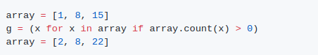
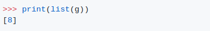
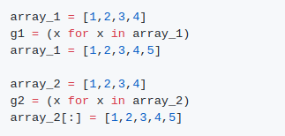
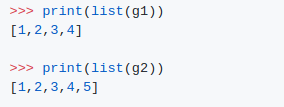

1.
output
2.
output
설명:
발전기 표현에서, 조항은 선언 시간에 평가되지만 조건 조항은 런타임에 평가됩니다.
따라서 런타임 전에 어레이를 목록[2, 8, 22]에 다시 할당하고, 1, 8, 15개 중 8개만 0보다 크므로 제너레이터만 8개를 생성합니다.
두 번째 파트에서 g1과 g2 출력의 차이는 변수 array_1과 array_2가 값을 재할당한 방식에 기인합니다.
첫 번째 경우, array_1은 새 개체[1,2,3,4,5]에 바인딩되며, 선언 시간에 절이 평가되기 때문에, 여전히 이전 개체[1,2,3,4] (파쇄되지 않습니다)를 참조합니다.
두 번째 경우, 어레이_2에 대한 슬라이스 할당은 동일한 이전 개체[1,2,3,4]를 [1,2,3,4,5]로 업데이트합니다. 따라서 g2와 array_2는 여전히 동일한 개체[1,2,3,4,5]로 업데이트되었습니다.